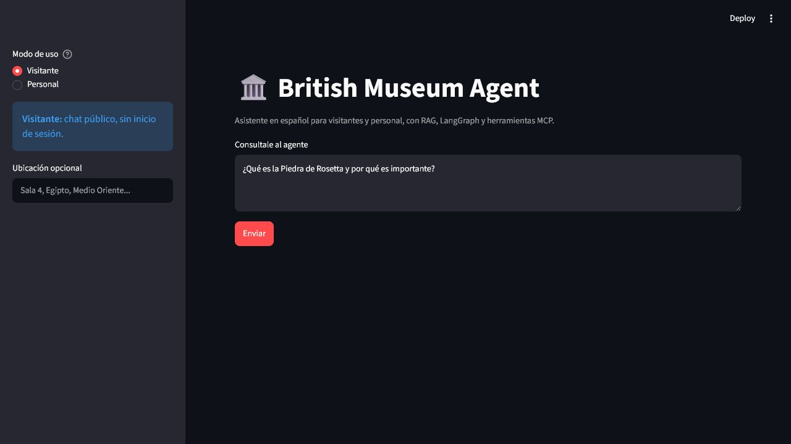
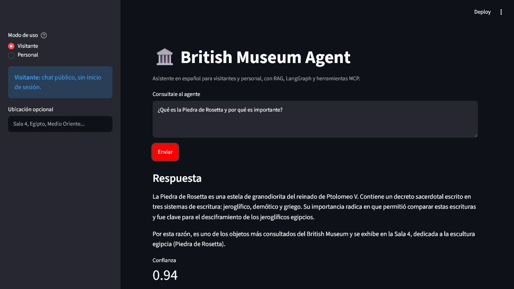
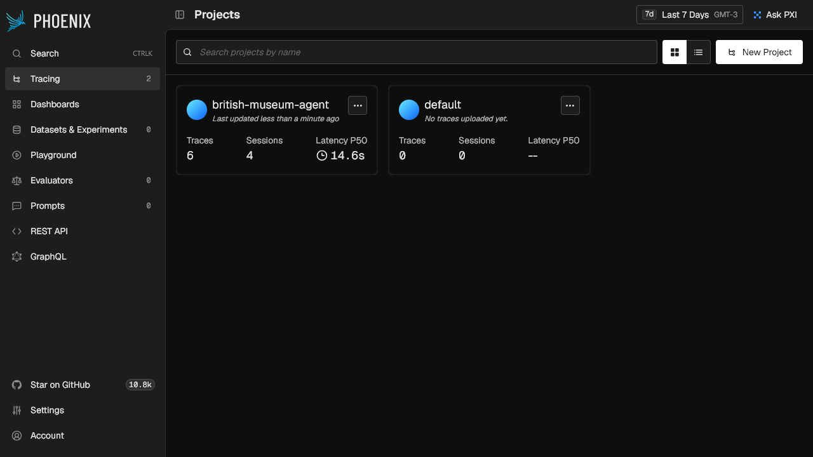
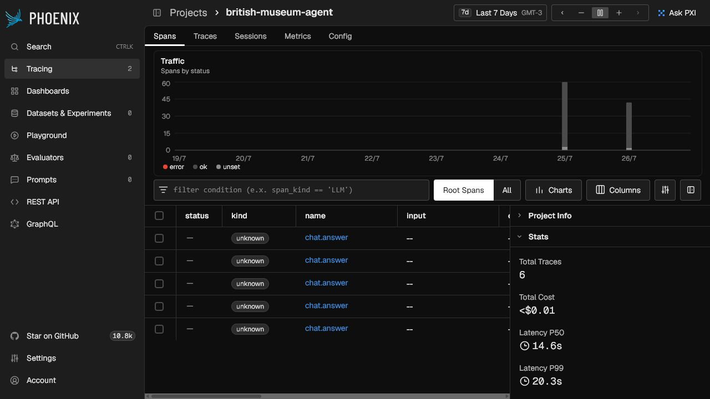
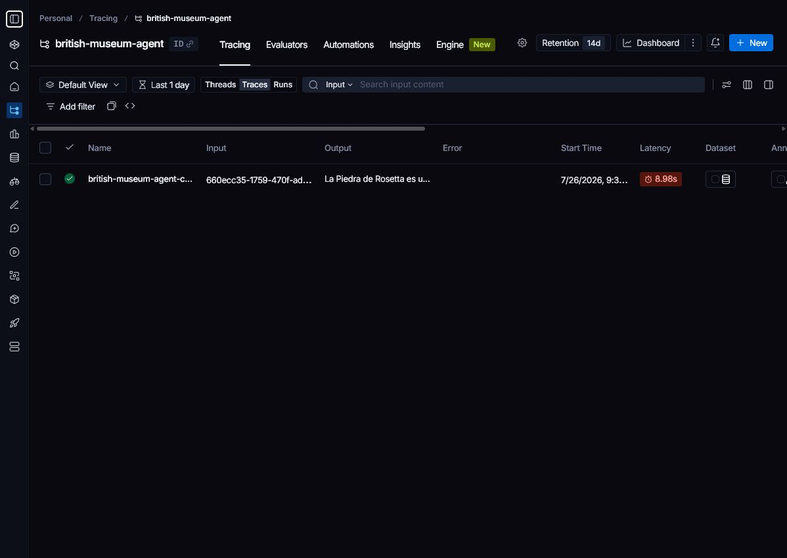
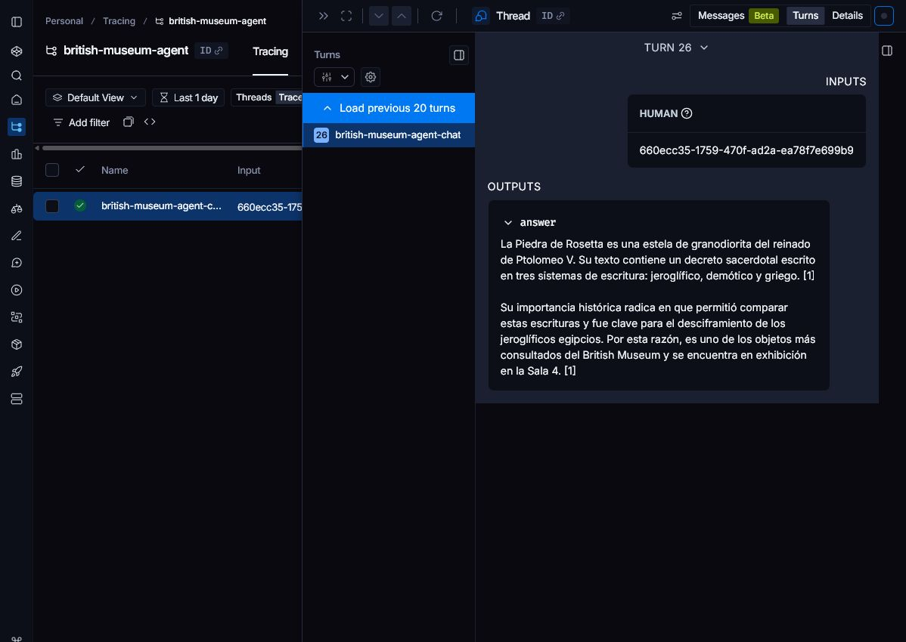

Estado general
Sistema implementado y verificado
El sistema ejecuta un RAG en español con ChromaDB, embeddings multilingües, reranking Hugging Face, LangGraph, MCP y Gemini. Utiliza LangSmith para trazas gestionadas y Phoenix OSS para observabilidad local. El backend expone métricas y el despliegue Kubernetes fue validado end-to-end en Docker Desktop.
La consulta real respondió en Kubernetes con Chroma, reranker y Gemini, y produjo una traza de proyecto visible en Phoenix local. El repositorio quedó limpio, documentado y con 125 pruebas aprobadas.
La entrega incluye observabilidad local con Phoenix, métricas Prometheus y despliegue Kubernetes en Docker Desktop. La operación en servicios cloud administrados y la evaluación factual con un benchmark anotado forman parte de la evolución de plataforma.
Evidencia visual
Sistema ejecutado en Kubernetes
Capturas obtenidas durante una ejecución real del overlay dev en Docker Desktop, con Streamlit, FastAPI, MCP, Gemini y Phoenix activos.






De la interfaz a la respuesta
Arquitectura de la solución
Streamlit es la interfaz. FastAPI valida contratos e identidad. LangGraph coordina el flujo. RAG aporta evidencia histórica, MCP aporta datos operativos y Gemini redacta.
Backend
FastAPI en 8000; expone chat, health, métricas, login e incidentes.
MCP
Servidor Streamable HTTP en 8001; tools operativas protegidas por token.
UI
Streamlit en 8501; visitante sin login y personal con JWT.
Orquestación
Flujo de ejecución de LangGraph
validate_inputRechaza consultas inválidas y normaliza el idioma.handle_incidentDetecta altas, confirmaciones o consultas de incidentes antes de RAG.retrieve_contextBusca en Chroma; incorporalocation_hint.evaluate_contextDecide si hay evidencia suficiente para continuar.decide_tool_usageDetermina si corresponde consultar una tool MCP.execute_toolConsulta estado operativo y registra éxito, error y latencia.generate_answerGenera con Gemini mediante la pipeline LCEL; si no hay evidencia usa respuesta segura.evaluate_or_refineEvalúa grounding y puede refinar la consulta una sola vez.finalizeConstruye el contrato final y termina enEND.
La única vuelta posible es evaluate_or_refine → retrieve_context. El estado cuenta intentos y el máximo es dos. Después, todas las rutas pasan por finalize → END. Así se cumple el ciclo sin permitir loops infinitos ni repetir operaciones MCP.
src/british_museum_agent/agent/graph.py y src/british_museum_agent/orchestration/quality.pyRecuperación aumentada
Pipeline RAG
Ingesta
- Lee el corpus español en Markdown/PDF.
- Normaliza y divide en chunks.
- Calcula fingerprint del corpus.
- Genera embeddings con
paraphrase-multilingual-MiniLM-L12-v2. - Persiste la colección
british_museum_esen Chroma.
Consulta
- Embedding de la pregunta.
- Consulta vectorial de candidatos.
- Reranking con cross-encoder Hugging Face.
- Filtrado por evidencia y armado del contexto.
- Gemini responde sólo con ese contexto.
chroma y reranker huggingface_cross_encoder activos. Si Chroma falla, existe fallback léxico explícito.Relevancia
Ranking y re-ranking
Ranking inicial
Chroma ordena candidatos por similitud vectorial. Recupera más documentos que los que finalmente se entregan al modelo.
Re-ranking
El cross-encoder compara pregunta y documento con atención conjunta. El score final combina 25% similitud vectorial + 75% reranker.
El agente entrega los mejores fragmentos al prompt. El primer score debe superar el umbral configurado para considerar que hay evidencia; si no, refina una vez o responde sin inventar.
Organización del código
Estructura del proyecto
Cada componente del pipeline RAG y del agente tiene su propia carpeta, con contratos, tests y documentación. El proyecto sigue una arquitectura hexagonal (puertos y adaptadores).
retrieval/
Conecta con ChromaDB persistente para búsqueda semántica. Incluye embeddings multilingües locales (paraphrase-multilingual-MiniLM-L12-v2), indexación idempotente con fingerprint, carga de corpus desde Markdown/PDF, y un fallback léxico con stemming en español si Chroma no está disponible.
vector_store.py, corpus.py, knowledge_base.py, indexer.pyranking/
Implementa el re-ranker cross-encoder (mmarco-mMiniLMv2-L12-H384-v1). Toma los candidatos de Chroma y los reordena por relevancia real. El score final combina 25% similitud vectorial + 75% reranker. Expone estado de salud (reranker_active) para el endpoint de health check de la API.
reranker.pyorchestration/
Orquestación con LangChain: define la evaluación determinista de grounding (evaluate_grounding) que mide evidencia, cobertura de fuentes y longitud de respuesta. También refina la consulta para reintentos (refine_retrieval_query). El pipeline de generación (LCEL) se re-exporta desde aquí para que la carpeta exponga todos los símbolos de orquestación.
quality.py, __init__.py (re-exporta AnswerGenerator)agent/
Agente cíclico con LangGraph. StateGraph de 9 nodos que valida input, maneja incidentes, recupera contexto, evalúa evidencia, decide si usa tools MCP, genera respuesta con Gemini y evalúa si refinar (máximo 2 intentos). Cada nodo tiene una ruta condicional; el ciclo está acotado para evitar loops infinitos. Incluye MemorySaver checkpointer que registra checkpoints por ejecución usando un thread_id compuesto por sesión y traza, lo que permite inspeccionar estados intermedios sin mezclar solicitudes.
graph.py (MemorySaver + StateGraph)adapters_mcp/
Implementación del Model Context Protocol 1.28.1. Servidor FastMCP con transporte Streamable HTTP y 4 tools: get_gallery_status, get_accessibility_info, create_incident, get_incident. Las tools de escritura están protegidas por un token interno enviado en el header de transporte X-MCP-Internal-Token y validado con comparación en tiempo constante; nunca se incluye como argumento de tool. El cliente MCP se comunica con el servidor a través del mismo protocolo, con health check propio.
server.py, client.py, museum_tools.pyobservability/
Métricas Prometheus in-process (ServiceMetrics) para HTTP (requests, errores, latencia por ruta), chat (confianza, groundedness proxy, hallucination risk proxy, tool errors) y proceso (CPU, memoria). Endpoint /metrics en formato Prometheus y /api/v1/metrics/summary en JSON. Trazabilidad con Arize Phoenix vía OTLP exporter gRPC + OpenInference LangChain instrumentation. LangSmith integrado por environment variables con tags y metadata.
metrics.py, tracing.py, quality.pydeploy/
Despliegue con Kustomize: base con namespace, backend, UI, MCP server, Phoenix, PVC (4 volúmenes), HPA (UI 2–5 en base y 1–2 en dev; backend 1), NetworkPolicies (6 reglas) y Secret template. Overlay dev reduce réplicas. Scripts de automatización: PowerShell (deploy_k8s.ps1) con validate → render → dry-run → apply → status → rollback, manage_k8s.ps1 con start → status → stop, y validador estático Python (validate_k8s.py) con 177 checks; la validación completa del overlay ejecuta 179.
base/, overlays/dev/api/ (endpoints FastAPI), application/ (casos de uso), domain/ (modelos de dominio), generation/ (pipeline LLM), infrastructure/ (repositorio SQLite) e interfaces/ (UI Streamlit). Todo está en src/british_museum_agent/.Permisos
Visitante y personal
Visitante
- Consulta obras, artistas, salas, recorridos y accesibilidad.
- No necesita login.
- No puede ejecutar operaciones staff.
Personal
- Inicia sesión con usuario y contraseña demo.
- Recibe JWT firmado.
- Puede consultar estado de salas y registrar incidentes.
- El rol real lo determina FastAPI, no el navegador.
API
Input y output
| Endpoint | Uso | Auth |
|---|---|---|
POST /api/v1/chat | Pregunta, idioma, ubicación opcional; devuelve respuesta, fuentes, tools, confianza, runtime y trace ID. | Visitante o JWT staff |
POST /api/v1/auth/login | Credenciales demo → JWT bearer; doble rate limit por cuenta y origen. | Público |
POST /api/v1/incidents | Alta manual protegida de incidente. | JWT staff |
GET /api/v1/incidents/{id} | Consulta operativa de incidente. | JWT staff |
GET /metrics | Exposición Prometheus. | Interno |
GET /api/v1/metrics/summary | Resumen JSON de métricas. | Interno |
Generación, trazas y degradación
Gemini, LangChain, LangSmith y Phoenix
Gemini
gemini-2.5-flash genera en español con evidencia y datos MCP. Si falla, hay fallback local explícito.
LangChain
La generación usa LCEL: RunnableLambda → ChatPromptTemplate → modelo → StrOutputParser.
LangSmith
Integración activa en Kubernetes; registra ejecuciones de LangChain/LangGraph con latencia, tokens, costo, tags y metadata.
Compose y Kubernetes ejecutan Phoenix persistente en 6006; OTLP gRPC usa 4317. OpenTelemetry/OpenInference envía trazas con inputs/outputs ocultos y la API de Phoenix confirmó el proyecto british-museum-agent.
La ejecución Kubernetes registró la traza british-museum-agent-chat, incluidos los runs de generación, evaluación y finalización.
Métricas implementadas
| Área | Medición |
|---|---|
| Tráfico | Requests, errores, status, latencia, máximo y throughput acumulado. |
| Calidad | Confianza, no-evidence, groundedness proxy y hallucination-risk proxy. |
| Recursos | CPU acumulada y memoria residente cuando el sistema operativo lo permite. |
| Tools | Errores por tool y fallos de chat. |
Alcance de las métricas: groundedness y hallucination risk se calculan como señales operativas; un benchmark factual anotado permitiría ampliar la evaluación comparativa. Detalle en docs/observability.md.
Ejecución
Docker, persistencia y despliegue
Compose local
docker compose up --build inicia Phoenix, MCP, backend y UI. El backend ingesta/indexa durante el primer arranque; los datos se montan fuera de la imagen.
Puertos: UI 8501, API 8000, MCP 8001, Phoenix 6006.
Kubernetes
deploy/base y deploy/overlays/dev incluyen Kustomize, PVC, probes, NetworkPolicy, HPA y Secret de ejemplo.
scripts/manage_k8s.ps1 start construye, despliega y publica UI, API y Phoenix; stop libera memoria conservando los PVC. La UI escala 2–5 en la base y 1–2 en el overlay dev; el backend queda en 1 réplica por el almacenamiento ReadWriteOnce.
scripts/validate_k8s.py ejecuta 177 checks estáticos y scripts/deploy_k8s.ps1 -Action validate -Overlay dev completa 179. scripts/manage_k8s.ps1 automatiza start, status y stop, incluida la preparación de metrics-server en Docker Desktop.Validación
Testing: 125 casos de prueba
Cómo ejecutar
pytest -q ejecuta 125 pruebas automatizadas. La cobertura se organiza por capacidad:
- LangGraph, recuperación RAG y respuestas con evidencia.
- Contratos FastAPI, validaciones y health checks.
- MCP, autorización interna y persistencia SQLite.
- Métricas, trazabilidad y señales de calidad.
- Corpus Markdown/PDF, Chroma y reranking.
- Autenticación staff y flujo seguro de incidentes.
Casos de uso cubiertos
- 🔎 Consulta RAG con fuentes — pregunta sobre Egipto, obtiene respuesta citando fragmentos de conocimiento
- 🏛️ Estado operativo — horarios, galerías cerradas, MCP tool sin evidencia RAG
- ⚠️ Incidente de sala — extracción de datos → confirmación vinculada → creación mediante MCP
- ❌ Sin evidencia — pregunta fuera del corpus, el agente deriva a
no_evidence - 🔁 Checkpoints — verifica que MemorySaver registra el estado de cada ejecución
- 🛡️ Seguridad — JWT inválido, roles, límites de entrada, rate limiting de login, protección MCP y SQL parametrizado
- 📊 Métricas — latencia, hallucination risk proxy, groundedness, recursos, trazas Phoenix
Evaluación contra el entregable
Matriz de cumplimiento
| Requisito | Evidencia actual | Estado |
|---|---|---|
| Componentes modulares | Retrieval, ranking, agent, orchestration, adapters_mcp, observability, deploy y adicionales (api, application, domain, generation, infrastructure, interfaces). | ✓ Cumple |
| Base vectorial y reranker | Chroma persistente, 117 chunks, embeddings multilingües y cross-encoder Hugging Face. | ✓ Cumple |
| Orquestación LangChain | Pipeline LCEL observable para la generación. | ✓ Cumple |
| Agente cíclico LangGraph | Reintento controlado a retrieval, máximo dos intentos, luego END. | ✓ Cumple |
| MCP seguro | Streamable HTTP, token interno, JWT staff y tools operativas. | ✓ Cumple |
| Kubernetes y/o serverless | Kubernetes probado en Docker Desktop; serverless no elegido por persistencia y warm-up. | ✓ Kubernetes |
| Automatización y escalado | Script operativo, Makefile, HPA UI 2–5 en base y 1–2 en dev, con backend limitado a una réplica. | ✓ Cumple |
| LangSmith y Arize | LangSmith y Phoenix OSS activos y verificados. AX Cloud queda opcional. | ✓ Integrado |
| Latencia, throughput, calidad y recursos | Endpoint Prometheus/JSON con métricas y proxies documentados. | ✓ Con alcance |
| Documentación operativa | docs/observability.md, docs/deployment.md, docs/metrics.md y 5 ADRs en docs/adr/. | ✓ Cumple |
| Despliegue real | Manifiestos y scripts aplicados en Docker Desktop con smoke end-to-end. | ✓ Verificado |
Roadmap técnico
Evolución de plataforma
Estas iniciativas amplían capacidad y operación empresarial; no condicionan la funcionalidad ni la validación del entregable actual.
Benchmark factual
Incorporar un dataset anotado para comparar groundedness, precisión y cobertura entre versiones.
Observabilidad gestionada
Integrar dashboards centralizados con Prometheus/Grafana o una plataforma Arize administrada.
Escalado horizontal
Externalizar SQLite y Chroma para habilitar múltiples réplicas independientes del backend.
Infraestructura cloud
Publicar imágenes propias en un registry y desplegar el mismo overlay en un cluster administrado.
Cobertura verificada
Estado del entregable
Implementación funcional
- Streamlit → FastAPI → LangGraph.
- Chroma con 117 chunks y reranker real.
- Gemini con fallback local.
- MCP sobre SQLite y JWT staff.
- LangSmith integrado y Phoenix OSS activo.
- Métricas y documentación operativa.
- Docker Compose y Kustomize Kubernetes.
Evidencia de validación
- 125 pruebas automatizadas aprobadas.
- 177 checks estáticos y 179 checks del overlay Kubernetes.
- Smoke end-to-end con Gemini, MCP, LangSmith y Phoenix.
- Índice Chroma idempotente con 117 chunks.
- Ciclo start/status/stop validado con PVC preservados.
El repositorio satisface la estructura, funcionalidad, documentación, observabilidad y despliegue solicitados para el sistema de IA en producción.